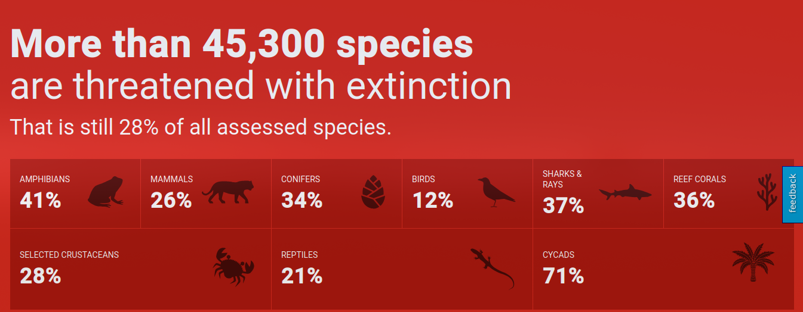

Introducción
La pérdida de biodiversidad es uno de los mayores desafíos ambientales que enfrenta la humanidad en la actualidad. Los animales en peligro de extinción representan una advertencia sobre la fragilidad de los ecosistemas y el impacto negativo de las actividades humanas en el planeta. Este artículo explora el estado actual de las especies en peligro de extinción y las causas detrás de su declive.
Datos sobre la Extinción de Especies
Según la Unión Internacional para la Conservación de la Naturaleza (UICN), más de 40,000 especies se encuentran en peligro de extinción. Desde 1970, las poblaciones de aves, mamíferos, peces, reptiles y anfibios han disminuido en un 69%. Además, de las 8,300 razas de animales conocidas, el 8% ya se ha extinguido y el 22% está en peligro de desaparecer. Estos datos han llevado a algunos científicos a advertir sobre una posible sexta extinción masiva.
Algunos Animales en Peligro de Extinción
- Oso polar
- Lince ibérico
- Pangolín
- Ajolote
- Gorilas
- Rinoceronte negro
- Koalas
- Pingüino de Galápagos
Uno de los ejemplos más críticos es el tigre de Sumatra, una subespecie que se enfrenta a una dramática reducción de su hábitat debido a la deforestación. Actualmente, quedan menos de 400 individuos en estado salvaje. De manera similar, el rinoceronte de Java está al borde de la extinción, con menos de 75 ejemplares en libertad, como consecuencia de la caza ilegal por sus cuernos y la pérdida de su entorno natural.
Causas de la Extinción
- Cambio climático: Aumento de las temperaturas que altera los hábitats.
- Pérdida de hábitat: Expansión agrícola y deforestación.
- Caza furtiva: Explotación ilegal de animales como el rinoceronte y el elefante.
- Contaminación: Acumulación de plásticos y productos químicos.
- Enfermedades: Transmisión de enfermedades por especies domésticas.
Conclusiones
El estado de los animales en peligro de extinción es una clara señal de la crisis ambiental que enfrentamos. Proteger la biodiversidad es crucial no solo para la ética ambiental, sino también para la supervivencia humana. Los esfuerzos de conservación deben intensificarse para mitigar las consecuencias devastadoras de la extinción de especies.
Referencias Bibliográficas
- Blanco, T. A. (2024, julio 28). 12 animales que están en peligro de extinción en 2024. BBVA. Enlace
- Seijas, M. (2022, julio 27). Animales en peligro de extinción en 2024: listado con las 27 especies más emblemáticas. Urban Tecno. Enlace
- Rodríguez, H. (2021, mayo 11). Animales en peligro de extinción (lista 2024). National Geographic. Enlace
- UICN. (2023). The IUCN Red List of Threatened Species. Unión Internacional para la Conservación de la Naturaleza. Enlace
- Animales en vía de extinción. (2011, mayo 2). Secretaría de Cultura, Recreación y Deporte. Enlace
- Greenfield, E. (2024, marzo 24). Las especies en peligro crítico del mundo en 2024. Sigma Earth. Enlace